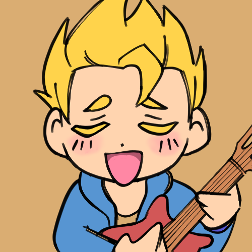

As of update 1.5, Stardew Valley currently has 6 bachelors. Learn about their birthday, occupation, residence, and what relations they have in the Valley. Each person has their own quirks and interests, so feel free to read up on all of them! This is just a baseline for each bachelor, and it is highly advised to try getting to know them a bit better in the game before making a decision.
Alex
Occupation: Highschool Graduate
Birthday: Summer 13
Residency: 1 River Road, Pelican Town
Relations: Evelyn (grandmother), George (grandfather), Haley (friend)
Love Gifts: Complete Breakfasts, Salmon Dinner
Hate Gifts: Holly, Quartz
Description: Alex is an energetic young man who loves to play sports at any time of the year. He has big ambitions of becoming a professional athlete and he will let you know that. Despite his cocky exterior, Alex is quite the sensitive individual who is quite insecure about himself. With a little push, Alex may be able to find his true purpose in life.
Sam
Occupation: Joja Janitor (Musician on the side!)
Birthday: Summer 17
Residency: 1 Willow Lane, Pelican Town
Relations: Jodi (mother), Vincent (brother), Kent (father), Abigail (friend), Penny (friend), Sebastian (friend)
Love Gifts: Cactus Fruit, Maple Bar, Pizza, Tigerseye
Hate Gifts: Coal, Copper Bar, Duck Mayonnaise, Gold Bar, Gold Ore, Iridium Bar, Iridium Ore, Iron Bar, Mayonnaise, Pickles, Refined Quartz
Description: Sam is an outgoing, family-oriented individual who cherishes the people in his life. With his talent in music, Sam dreams of starting his own band, though his overly idealistic personality may hold him back. Perhaps with the right muse, he will go on to achieve great things.
Sebastian
Occupation: Programmer
Birthday: Winter 10
Residency: 24 Mountain Road
Relations: Robin (mother), Demetrius (step-father), Maru (half-sister), Abigail (friend), Sam (friend)
Love Gifts: Frozen Tear, Obsidian, Pumpkin Soup, Sashimi, Void Egg
Hate Gifts: Clay, Complete Breakfast, Farmer's Lunch, Omelet
Description: Sebastian may not fit in with the crowd, and he is quite content with that. While he may appear to only care about himself, Sebastian is not the entirely cold-hearted guy that he portrays himself as. Though he will express his distaste, Sebastian may or may not find some company to be quite nice.
Elliot
Occupation: Writer
Birthday: Fall 5
Residency: The Beach
Relations: Leah (friend), Willy (friend)
Love Gifts: Crab Cakes, Duck Feather, Lobster, Pomegranate, Squid Ink, Tom Kha Soup
Hate Gifts: Amaranth, Quartz, Salmonberry, Sea Cucumber
Description: A poet, a romantic, a dreamer. Elliot is a man who lives day by day and by the moment, or whatever he could afford that week. As a passionate writer, he spends most of his time working on his novel. Even so, Elliot does love to take frequent evening trips to the Stardrop Saloon, looking for his spark of inspiration.
Harvey
Occupation: Doctor
Birthday: Winter 14
Residency: Harvey's Clinic, Pelican Town
Relations: Maru (friend)
Love Gifts: Coffee, Pickles, Super Meal, Truffle Oil, Wine
Hate Gifts: Coral, Nautilus Shell, Rainbow Shell, Salmonberry, Spice Berry
Description: Harvey is quite a busy man working constantly as the town's doctor. He has an endearing and dependable nature, though he is sometimes a nervous klutz. Despite the pride he has in his line of work, it does appear this doctor's passion lies somewhere else.
Shane
Occupation: Joja Shelf Stocker
Birthday: Spring 20
Residency: Marney's Ranch, Cindersnap Forest
Relations: Marnie (aunt), Jas (goddaughter)
Love Gifts: Beer, Hot Pepper, Pepper Poppers, Pizza
Hate Gifts: Practically anything healthy
Description: Yeesh, alright. On the surface, he may seem to hate everyone. On the inside, he might actually hate everyone. Whatever the case may be, this pessimist can be really endearing once he opens up. Quality time is his love language and he will repay kindness with loyalty, even if it means stealing pizzas from work.